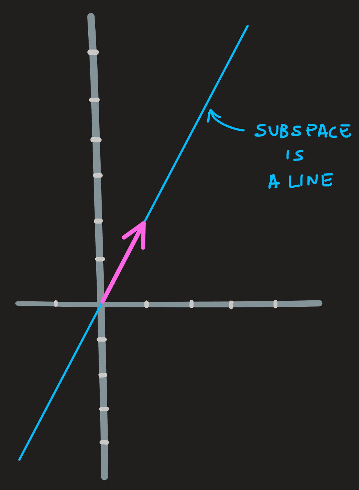
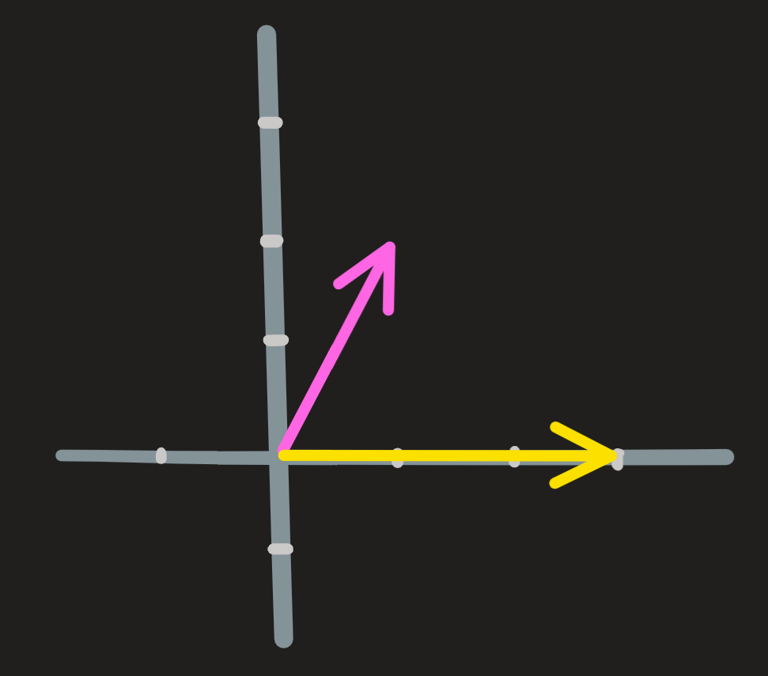
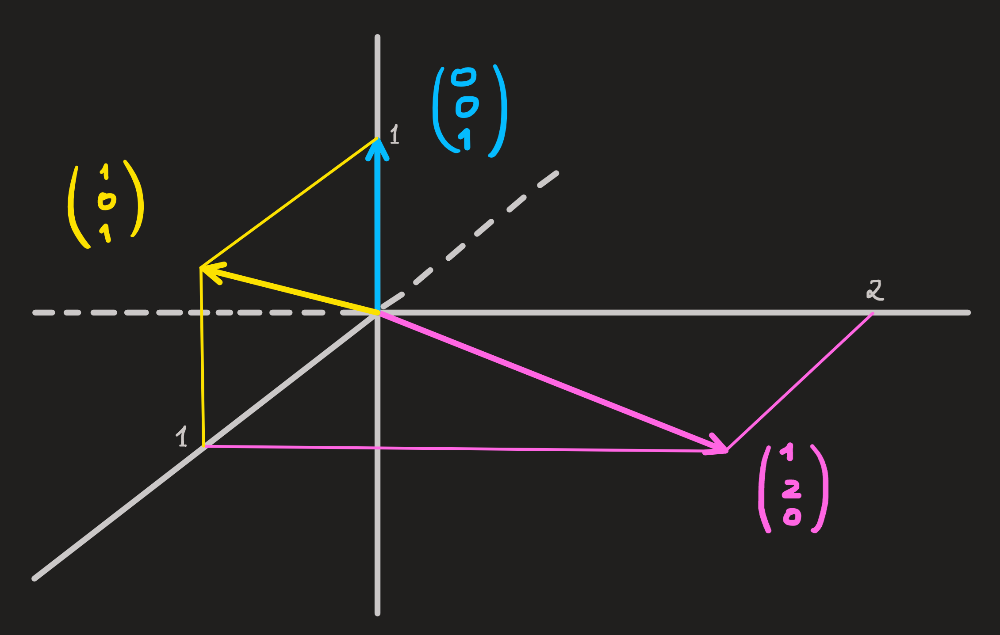
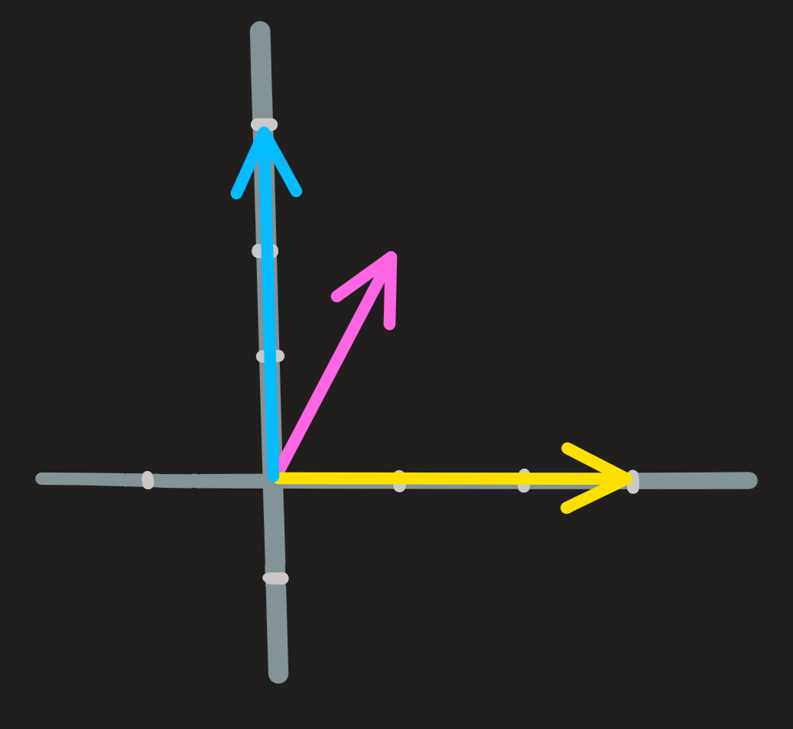
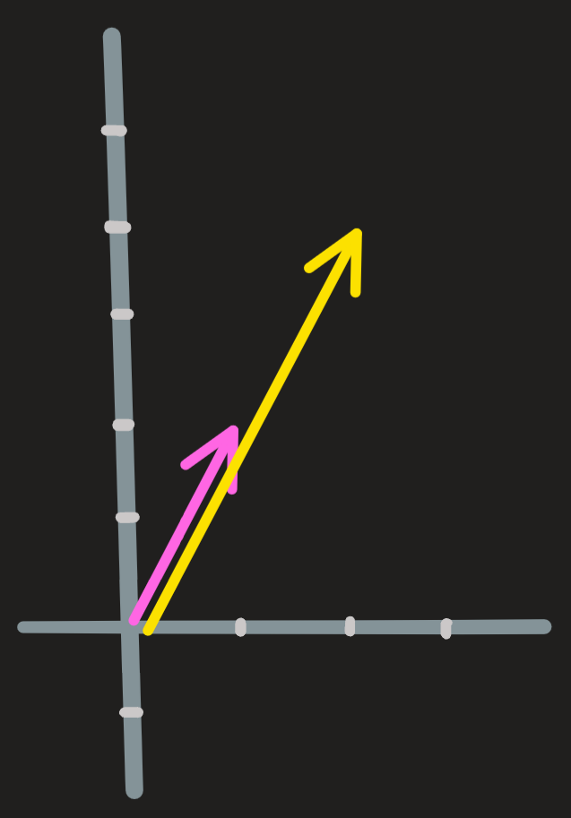

Vector spaces
Linear combinations of vectors
Instead of telling you what a vector is lets see what can you do with them. So, for the moment we’ll consider a vector, or better said - a column vector - an array of numbers which we write as:
\[ \begin{pmatrix}1\\5\end{pmatrix}, \begin{pmatrix}1\\-5\\0.1\end{pmatrix},\begin{pmatrix}x\\y\\z\end{pmatrix} \]
What can you do with vectors? Answer: linear combinations! A linear combination is a computation that looks like this:
\[ 3 \mathbf{u}+2\mathbf{v} = 2\begin{pmatrix} 1\\3\end{pmatrix}+4\begin{pmatrix} 1\\-1\end{pmatrix} \]
First multiply the vectors by the scalars, then add the vectors by adding the entries, the result is:
\[ \begin{pmatrix} 2\\6\end{pmatrix}+\begin{pmatrix} 4\\-4\end{pmatrix} = \begin{pmatrix} 6\\2 \end{pmatrix} \]
A generic linear combination looks like this:
\[ a \mathbf{u}+b\mathbf{v} = a\begin{pmatrix} 1\\5\end{pmatrix}+b\begin{pmatrix} 2\\10\end{pmatrix} = \begin{pmatrix}a +2b\\5a +10b \end{pmatrix} \]
where \(a\) and \(b\) are scalars.
If you know how to combine two vectors, you know how to combine three and so on.
The geometrical addition of vectors is performed using the paralelogram rule:
Vector spaces and Subspaces
The operation of linear combination allow us to construct vector spaces. Here are some examples:
Example One: Consider the vector \(\begin{pmatrix} 1\\2\end{pmatrix}\), this is our starting point. Now imagine multiplying it by every possible scalar; the end result is a set of vectors which lie along the same line:

This set of vectors has a special property: any linear combinations of its vectors yields another vector in the set, in particular if you multiply the vector by zero, we get the origin. Because of this, we call this set a vector space.
Note that: the same line (vector space) results if you consider the vector \(\begin{pmatrix} 2\\4\end{pmatrix}\) or any other from the set.
Additionally, since the line is a subset of vectors of the entire plane, we call this a subspace of \(\mathbb{R}^2\).
This is also an example you found from high-school, recall that a the set of vectors \(c\begin{pmatrix}1\\2\end{pmatrix}\) spans a line that passes through the origin, it is the line whose equation is \(y=2x\).
CommentaryMultiplying a vector by a scalar is just a particular example of a linear combination:
\[ a\begin{pmatrix}1\\2\end{pmatrix}+b\begin{pmatrix}0\\0\end{pmatrix} \]
Example Two: Consider the vectors \(\begin{pmatrix} 1\\2\end{pmatrix}\) and \(\begin{pmatrix} 3\\0\end{pmatrix}\). Now multiply both by every possible scalar and then them; the end result is again a set of vectors. All these vectors lie in a two dimensional plane \(\mathbf{R}^2\):

From the picture, it is easy to convince yourself that any linear combination of two vectors of the plane \(\mathbb{R}^2\) is another vector in \(\mathbb{R}^2\). More, notice the same space comes about if we consider \(\begin{pmatrix} 1\\0\end{pmatrix}\) and \(\begin{pmatrix} 0\\1\end{pmatrix}\), or any other two pair of vectors that point in distinct directions.
Example Three: Consider the vectors \(\begin{pmatrix} 1\\2\\0\end{pmatrix}\) and \(\begin{pmatrix} 1\\0\\1\end{pmatrix}\) and \(\begin{pmatrix} 0\\0\\1\end{pmatrix}\). Linear combine them with every scalar and you obtain a set of vectors. All these vectors fill the three dimensional space \(\mathbb{R}^3\).

Example Four: Consider the vectors \(\begin{pmatrix} 1\\2\end{pmatrix}\) , \(\begin{pmatrix} 3\\0\end{pmatrix}\) and \(\begin{pmatrix} 0\\1\end{pmatrix}\). All linear combinations of these three vectors always yield a vector in \(\mathbf{R}^2\), a two-dimensional vector space and not three-dimensional!

Notice one of the three vectors is redundant.
Example Five: Consider the vectors \(\begin{pmatrix} 1\\2\\0\end{pmatrix}\) and \(\begin{pmatrix} 0\\0\\1\end{pmatrix}\). All linear combination do NOT generate the entire three dimensional space, they generate a subspace of two dimensions, the plane in the following picture.
Again, recall from high-school that a plane with equation \(-x+1/2y=0\) contains the origin and is perpendicular to the vector \((-1,1/2,0)\). This plane is the vector space:
There are many examples that can be provided but I feel these suffice for you to understand some key points:
- Having a mental picture of the process of linear combining vectors is key to understand whether it results in a line, a plane or three dimensional space.
- The kind of resulting space (line, plane, three-space) depends on the vectors we decide to combine. But how? We will see in next section.
- In all these examples, the resulting set contains a very special vector, the \(\mathbf{0}\), vector at the origin - just choose your scalars as zero.
- The vectors we consider at the beginning of each example are just one example of many other possible choices we could have made to generate that space.
All these linear combinations result in a set of vectors, but this set has a very important property: any linear combination of its vectors (I mean any!) yields another vector in the set. Please note, the \(\mathbf{0}\) vector must always belong to a vector space! And thus we define (like in a dictionary)
[vector space] = [a set, an operation (linear combination) plus this fact above]
Linear dependence and independence
First lets see what it is, then how to check it. As we will see throughout the course there are many ways of doing it.
This is seen best with examples.
Example 1: Just consider two parallel vectors

One is just twice the other. They are dependent because you can create one from the other:
\[ \begin{pmatrix} 2\\4\end{pmatrix} = 2 \begin{pmatrix} 1\\2\end{pmatrix} \qquad\text{or}\qquad \begin{pmatrix} 1\\2\end{pmatrix} = \frac{1}{2} \begin{pmatrix} 2\\4\end{pmatrix} \]
Example 2: More difficult. Consider again the vectors \(\begin{pmatrix} 1\\2\end{pmatrix}\) , \(\begin{pmatrix} 3\\0\end{pmatrix}\) and \(\begin{pmatrix} 0\\3\end{pmatrix}\). If you discard the first vector, nothing is lost because through the linear combination of the second and third vectors we can recover it. Here is how:
\[ \frac{1}{3}\begin{pmatrix} 3\\0\end{pmatrix}+\frac{2}{3}\begin{pmatrix} 0\\3\end{pmatrix} = \begin{pmatrix} 1\\2\end{pmatrix} \]
In other words the first vector depends on the second and third vector through the linear combination above, it can be fully build from these pieces and thus it does not bring anything new.
What may not be so obvious is the fact that any vector from the three could be discarded, for example drop the second one! No problem the first and third vectors can construct it:
\[ \begin{pmatrix} 1\\2\end{pmatrix}-\frac{2}{3}\begin{pmatrix} 0\\3\end{pmatrix} = \begin{pmatrix} 1\\0\end{pmatrix} \]
For simple examples: If you can see visually what kind of vector space a given list of vectors gives to us, then you can also see whether there are superfluous or not. For more complex situations we need special techniques, but right now all I want for you to get the idea:
Vectors from a list are linearly independent if you cannot construct any one of them from the remaining ones.
and also how it can be paraphrased differently:
Vectors from a list are linearly independent when there exist scalars that when combine them yield the zero vector. Otherwise they are dependent.
We can already see this paraphrasing in the examples above, just rewrite the equations as:
\[ \begin{align} &\begin{pmatrix} 2\\4\end{pmatrix} - 2 \begin{pmatrix} 1\\2\end{pmatrix}=\begin{pmatrix} 0\\0\end{pmatrix} \\ &\begin{pmatrix} 1\\0\end{pmatrix}+2\begin{pmatrix} 0\\1\end{pmatrix} - \begin{pmatrix} 1\\2\end{pmatrix} = \begin{pmatrix} 0\\0\end{pmatrix}\\ &\begin{pmatrix} 1\\2\end{pmatrix}-2\begin{pmatrix} 0\\1\end{pmatrix} - \begin{pmatrix} 1\\0\end{pmatrix} =\begin{pmatrix} 0\\0\end{pmatrix} \end{align}\\ \]
It indeed shows that there exist scalars that combine the given vectors into the zero vector. Therefore saying that one vector of the list can be generated by the others.
Systems of equations
Lets review the method you use in high-school to solve systems of equations - the elimination method - and then rewrite it under a new notation - the matrix and vector notation.
A few examples will be given.
Matrix-vector notation for a system
Consider the system with two equations, called \(l_1\) and \(l_2\):
\[ \begin{cases} x-4y =2\\ 2x-6y = 5 \end{cases} \tag{1}\]
In Equation 1 we find two equations and two unknowns \(x\) and \(y\). We want their values such that both equations are satisfied.
Using the matrix-vector notation we can write Equation 1 as:
\[ \begin{pmatrix} 1 & -4\\ 2 & -6 \end{pmatrix}\begin{pmatrix}x\\y\end{pmatrix}= \begin{pmatrix}2\\5\end{pmatrix} \tag{2}\]
Lets read Equation 2 in words: the \(2\) by \(2\) matrix of coefficients is multiplied by the column vector \(\begin{pmatrix}x\\y\end{pmatrix}\) , the result is \(\begin{pmatrix}2\\5\end{pmatrix}\). This is one equation, and the unknown is the column vector \(\begin{pmatrix}x\\y\end{pmatrix}\).
How do we multiply a vector by a matrix?
Answer:
\[ \overbrace{\begin{pmatrix} 1 & -4\\ 2 & -6 \end{pmatrix}\begin{pmatrix}x\\y\end{pmatrix}}^\text{matrix-vector mult.} =\overbrace{\begin{pmatrix}1\cdot x-4\cdot y \\ 2\cdot x-6\cdot y\end{pmatrix}}^\text{scalar mult.} \]
Matrix times a vector on the lhs is just a super-compact way of writing the vector on the rhs. Moreover, notice the shapes of the matrix and vectors, this is very, very important. A \(2\) by \(2\) matrix times a \(2\) by \(1\) column vector yields a \(2\) by \(1\) column vector! If you understand this it should not be a problem to see what shapes are or not compatible, check this:
[\(2\times2\)][ \(3\times 1\)] \(=\) Nonsense
[\(3\times2\)][ \(2\times 1\)] \(=\) [\(3\times 1\)]
[\(2\times3\)][ \(3\times 1\)] \(=\) [\(2\times 1\)]
[\(3\times2\)][ \(3\times 1\)] \(=\) Nonsense
[\(1\times3\)][ \(3\times 1\)] \(=\) [\(1\times 1\)]
Solving the system using the Elimination method
Lets solve the system Equation 1 using the traditional rules we already know from high-school, recall:
- you can replace an equation by itself times some constant.
- you can replace any one equation by the sum both equations.
- you can isolate \(x\) or \(y\) in one equation and substitute in the other equation.
In other words, 1. and 2., just say this: you can replace \(l_1\) or \(l_2\) by some convenient combination \(al_1+bl_2\).
The central idea of the Elimination method is use combination of equations to eliminate variables and thus giving us an equivalent and easier to solve system. To eliminate variables we use clever use of rules \(1\) and \(2\). Once the system is simple enough we can use rule \(3\). How do you know what is or not a good combination? Just practice and see.
This recaps what you know, now lets use these rules to solve the Equation 1 and in parallel see the corresponding matrix-vector version.
step 1: Replace equation \(l_2\) by, \(l_2\) minus twice the equation \(l_1\), i.e., make the new second equation \(l_2'\) into \(l_2-2l_1\). This gives us:
\[ \begin{cases}x-4y =2\\2x-6y = 5\end{cases} \overset{l_2'=l_2-2l_1}{\longrightarrow}\begin{cases} x-4y =2\\ 2y = 1\end{cases} \]
Correspondingly we subtract from row \(l_2\) twice the row \(l_1\) in Equation 2, giving us
\[ \begin{pmatrix} 1 & -4\\ 2 & -6 \end{pmatrix}\begin{pmatrix}x\\y\end{pmatrix}= \begin{pmatrix}2\\5\end{pmatrix}\overset{l_2'=l_2-2l_1}{\longrightarrow} \begin{pmatrix} 1 & -4\\ 0 & 2 \end{pmatrix}\begin{pmatrix}x\\y\end{pmatrix}= \begin{pmatrix}2\\1\end{pmatrix} \]
step 2: Multiply equation \(l_2\) by \(1/2\):
\[ \begin{cases} x-4y =2\\ 2y = 1\end{cases}\overset{l_2'=1/2l_2}{\longrightarrow} \begin{cases} x-4y =2\\ y = 1/2\end{cases} \]
In matrix-vector notation we find:
\[ \begin{pmatrix} 1 & -4\\ 0 & 2 \end{pmatrix}\begin{pmatrix}x\\y\end{pmatrix}= \begin{pmatrix}2\\1\end{pmatrix}\overset{l_2'=1/2l_2}{\longrightarrow} \begin{pmatrix} 1 & -4\\ 0 & 1 \end{pmatrix}\begin{pmatrix}x\\y\end{pmatrix}= \begin{pmatrix}2\\1/2\end{pmatrix} \]
step 3: Since the system is simple enough, there are two way to go at this stage. You either substitute the equation \(y=1/2\) into the first equation \(x-4y=2\) and solve for \(x\), this gives us the answer \(x=4\) and \(y=1/2\). The second way to to go about it, is to simplify even further the system of equations, we do that by replacing \(l_1\) by, \(l_1\) plus four times \(l_2\):
\[ \begin{cases} x-4y =2\\ y = 1/2\end{cases}\overset{l_1'=l_1+4l_2}{\longrightarrow}\begin{cases} x =4\\ y = 1/2\end{cases} \]
In matrix-vector notation we find:
\[ \begin{pmatrix} 1 & -4\\ 0 & 1 \end{pmatrix}\begin{pmatrix}x\\y\end{pmatrix}= \begin{pmatrix}2\\1/2\end{pmatrix}\overset{l_1'=l_1+4l_2}{\longrightarrow} \begin{pmatrix} 1 & 0\\ 0 & 1 \end{pmatrix}\begin{pmatrix}x\\y\end{pmatrix}= \begin{pmatrix}4\\1/2\end{pmatrix} \]
From which we can read the final result \(x=4\) and \(y=1/2\).
Going through the three steps again we notice we can improve our matrix-vector notation by suppressing from it the column \(\begin{pmatrix}x\\y\end{pmatrix}\) and writing instead the steps as:
\[ \begin{pmatrix} 1 & -4 &\bigm| & 2 \\ 2 & -6 &| & 5 \end{pmatrix}\overset{l_2'=l_2-2l_1}{\longrightarrow} \begin{pmatrix} 1 & -4 &\bigm| & 2\\ 0 & 2 &\bigm| & 1\end{pmatrix} \overset{l_2'=1/2l_2}{\longrightarrow} \begin{pmatrix} 1 & -4 &\bigm| & 2\\ 0 & 1 &\bigm| & 1/2\end{pmatrix}\overset{l_1'=l_1+4l_2}{\longrightarrow} \begin{pmatrix} 1 & 0 &\bigm| & 4\\ 0 & 1 &\bigm| & 1/2\end{pmatrix} \]
From now on we’ll adopt this way of writing systems of equations, its called the extended matrix notation, because we appended a new column to right side of the \(2\times2\) matrix. From the extended matrix we read the solution as follows
\[ \begin{pmatrix} 1 & 0 &\bigm| & 4\\ 0 & 1 &\bigm| & 1/2\end{pmatrix}\longrightarrow \begin{pmatrix} 1 & 0\\ 0 & 1 \end{pmatrix}\begin{pmatrix}x\\y\end{pmatrix}= \begin{pmatrix}4\\1/2\end{pmatrix}\longrightarrow \begin{pmatrix}x\\y\end{pmatrix}= \begin{pmatrix}4\\1/2\end{pmatrix} \]
where in the last step we multiplied the vector by the matrix.
The vector
\[ \begin{pmatrix}4\\1/2\end{pmatrix} \]
is the solution of
\[ \begin{pmatrix} 1 & -4\\ 2 & -6 \end{pmatrix}\begin{pmatrix}x\\y\end{pmatrix}= \begin{pmatrix}2\\5\end{pmatrix} \]
Meaning, the solution of
\[ \begin{cases}x-4y =2\\2x-6y = 5\end{cases} \]
is:
\[ \begin{cases}x =4\\y=1/2\end{cases} \]
More examples of the elimination method
The following examples will be given:
A system with one solution
A system with no solution
A system with many solutions
Another system with many solutions
Example 1: A system with one solution
Consider the system, which we write in three different notations.
\[ \begin{cases} x+y-z=1\\ 2x-y+2z = 9\\ 2y=-x+z \end{cases} \leftrightsquigarrow \begin{pmatrix} 1 & 1 & -1\\ 2 & -1 & 2\\ 1 & 2 &-1 \end{pmatrix} \begin{pmatrix} x\\ y\\ z \end{pmatrix} = \begin{pmatrix} 1\\ 9\\ 0 \end{pmatrix} \leftrightsquigarrow \begin{pmatrix} 1 & 1 & -1 &\bigm| & 1\\ 2 & -1 & 2 &\bigm| & 9\\ 1 & 2 & -1 &\bigm| & 0 \end{pmatrix} \tag{3}\]
Again we’ll use the later notation during the elimination algorithm, because we don’t have to carry around the \(x\), \(y\) and \(z\) at each step.
\[ \begin{align} &\begin{pmatrix}1 & 1 & -1 &\bigm| & 1\\2 & -1 & 2 &\bigm| & 9\\1 & 2 & -1 &\bigm| & 0\end{pmatrix} \overset{l_2'=l_2-2l_1\\l_3'=l_3-l_1}{\longrightarrow} \begin{pmatrix}1 & 1 & -1 &\bigm| & 1\\0 & -3 & 4 &\bigm| & 7\\0 & 1 & 0 &\bigm| & -1\end{pmatrix} \overset{l_2 \leftrightarrow l_3}{\longrightarrow} \begin{pmatrix}1 & 1 & -1 &\bigm| & 1\\0 & 1 & 0 &\bigm| & -1\\0 & -3 & 4 &\bigm| & 7\end{pmatrix}\\ \overset{l_3'=l_3+3l_2}{\longrightarrow} &\begin{pmatrix}1 & 1 & -1 &\bigm| & 1\\0 & 1 & 0 &\bigm| & -1\\0 & 0 & 4 &\bigm| & 4\end{pmatrix} \overset{l_3'=1/4l_3}{\longrightarrow} \begin{pmatrix}1 & 1 & -1 &\bigm| & 1\\0 & 1 & 0 &\bigm| & -1\\0 & 0 & 1 &\bigm| & 1\end{pmatrix} \overset{l_1'=l_1+l_3}{\longrightarrow} \begin{pmatrix}1 & 1 & 0 &\bigm| & 2\\0 & 1 & 0 &\bigm| & -1\\0 & 0 & 1 &\bigm| & 1\end{pmatrix} \\ \overset{l_1'=l_1-l_2}{\longrightarrow} &\begin{pmatrix}1 & 0 & 0 &\bigm| & 2\\0 & 1 & 0 &\bigm| & -1\\0 & 0 & 1 &\bigm| & 1\end{pmatrix} \end{align} \]
Most of the system simplification (by elimination of variables) is done in this matrix-vector notation, looking at we find we went as far as we can, thus it is time to go back to the original notation - we find:
\[ \begin{cases} x = 3\\y=-1\\z=1 \end{cases} \]
which is the solution of the system of equations! Correspondingly, the solution for the matrix-vector notation is the following vector
\[ \begin{pmatrix} 2\\ -1\\ 1 \end{pmatrix} \]
Example 2: A system with no solution
The system this time is:
\[ \begin{cases} 2x-y=8\\ y+2x = 4\\ x=-y-1 \end{cases} \leftrightsquigarrow \begin{pmatrix} 2 & -1\\ 2 & 1\\ 1 & 1 \end{pmatrix} \begin{pmatrix} x\\ y \end{pmatrix} = \begin{pmatrix} 8\\ 4\\ -1 \end{pmatrix} \leftrightsquigarrow \begin{pmatrix} 2 & -1 &\bigm| & 8\\ 2 & 1 &\bigm| & 4\\ 1 & 1 &\bigm| & -1 \end{pmatrix} \]
To find how many solutions \(\begin{pmatrix}x\\y\end{pmatrix}\) are there, we try to compute them using the Elimination algorithm:
\[ \begin{align} &\begin{pmatrix}2 & -1 &\bigm| & 8\\2 & 1 &\bigm| & 4\\1 & 1 &\bigm| & -1\end{pmatrix} \overset{l_1\leftrightarrow l_3}{\longrightarrow} \begin{pmatrix}1 & 1 &\bigm| & -1\\2 & 1 &\bigm| & 4\\2 & -1 &\bigm| & 8\end{pmatrix} \overset{l_2'=l_2-2l_1\\l_3'=l_3-2l_1}{\longrightarrow} \begin{pmatrix}1 & 1 &\bigm| & -1\\0 & -1 &\bigm| & 6\\0 & -3 &\bigm| & 10\end{pmatrix}\\ \overset{l_2'=-l_2\\l_3'=l_3-3l_2}{\longrightarrow} &\begin{pmatrix}1 & 1 &\bigm| & -1\\0 & 1 &\bigm| & -6\\0 & 0 &\bigm| & 8\end{pmatrix} \overset{l_1'=l_1-l_2}{\longrightarrow} \begin{pmatrix}1 & 0 &\bigm| & 5\\0 & 1 &\bigm| & -6\\0 & 0 &\bigm| & -8\end{pmatrix} \end{align} \]
This means:
\[ \begin{pmatrix}1 & 0 &\bigm| & 5\\0 & 1 &\bigm| & -6\\0 & 0 &\bigm| & -8\end{pmatrix} \leftrightsquigarrow \begin{pmatrix}1 & 0 \\0 & 1 \\0 & 0 \end{pmatrix} \begin{pmatrix}x\\y\end{pmatrix}=\begin{pmatrix}5\\-6\\-8\end{pmatrix} \]
Now that most simplification is done, lets convert back to the system’s notation:
\[ \begin{cases} x=5\\ y=-6\\ 0=-8 \end{cases} \tag{4}\]
It is clearly impossible. No choice of \(x\) or \(y\) makes this three statements true simultaneously! Since Equation 3 is equivalent to Equation 4, therefore our original system Equation 3 has no solution as well.
Example 3: A system with many solutions
The system is:
\[ \begin{cases} x+y-z=0\\ 2x-y+2z = 0\\ \end{cases} \leftrightsquigarrow \begin{pmatrix} 1 & 1 & -1\\ 2 & -1 & 2\\ \end{pmatrix} \begin{pmatrix} x\\ y\\ z \end{pmatrix} = \begin{pmatrix} 0\\ 0 \end{pmatrix} \leftrightsquigarrow \begin{pmatrix} 1 & 1 & -1 &\bigm| & 0\\ 2 & -1 & 2 &\bigm| & 0\\ \end{pmatrix} \tag{5}\]
Solving:
\[ \begin{align} &\begin{pmatrix}1 & 1 & -1 &\bigm| & 0\\2 & -1 & 2 &\bigm| & 0\\\end{pmatrix} \overset{l_2'=l_2-2l_1}{\longrightarrow} \begin{pmatrix}1 & 1 & -1 &\bigm| & 0\\0 & -3 & 4 &\bigm| & 0\end{pmatrix} \overset{l_2'=-1/3l_2}{\longrightarrow} \begin{pmatrix}1 & 1 & -1 &\bigm| & 0\\0 & 1 & -4/3 &\bigm| & 0\end{pmatrix}\\ \overset{l_1'=l_1-l_2}{\longrightarrow} &\begin{pmatrix}1 & 0 & 1/3 &\bigm| & 0\\0 & 1 & -4/3 &\bigm| & 0\end{pmatrix} \end{align} \]
Once again, this notation means:
\[ \begin{pmatrix}1 & 0 & 1/3 &\bigm| & 0\\0 & 1 & -4/3 &\bigm| & 0\end{pmatrix} \leftrightsquigarrow \begin{pmatrix}1 & 0 & 1/3\\0 & 1 & -4/3 \end{pmatrix} \begin{pmatrix}x\\y\\z\end{pmatrix} = \begin{pmatrix}0\\0\end{pmatrix} \tag{6}\]
Converting back to the system notation have: \[ \begin{cases} x+1/3z =0\\ y-4/3z=0 \end{cases} \]
Substituting the \(z\) of the second equation into the \(z\) of the first we find:
\[ \begin{cases} x+1/3z =0\\ y-4/3z=0 \end{cases} \iff \begin{cases} x=-1/3z\\ y=4/3z \end{cases} \tag{7}\]
Asking what \(x,y,z\in \mathbb{R}\) that satisfy the equation Equation 5 is equivalent to ask, what is \(x,y,z\in \mathbb{R}\) that satisfy Equation 7 . Each real \(z\) we choose gives us the corresponding \(x\) and \(y\); as a consequence we have many solution. In other words, the solution is
\[ \begin{pmatrix} x\\ y\\ z \end{pmatrix} = \begin{pmatrix} -1/3z\\ 4/3z\\ z \end{pmatrix} \tag{8}\]
Example 4: Another system with many solutions
What is the solution \((x,y, z, w)\) for the following system:
\[ \begin{cases} &x&+ &2 y&+&2 z &+&2w &= 1\\ &2x&+&4y&+&6z&+&8w &= 2\\ &3x&+&6y&+&8z&+&10w &=3 \end{cases} \]
Using elimination algorithm we make linear combinations of the equation with the goal of eliminating variables, here is one way to go
\[
\begin{align}
&\begin{pmatrix}
1 & 2 & 2 & 2 &\bigm|1\\
2 & 4 & 6 & 8 &\bigm|2\\
3 & 6 & 8 & 10 &\bigm| 3
\end{pmatrix}
\overset{l_2' = l_2-2l_1}{\longrightarrow}
\begin{pmatrix}
1 & 2 & 2 & 2 &\bigm| 1\\
0 & 0 & 2 & 4 &\bigm| 0\\
3 & 6 & 8 & 10 &\bigm| 3
\end{pmatrix}
\overset{l_3' = l_3-3l_1}{\longrightarrow}
\begin{pmatrix}
1 & 2 & 2 & 2 &\bigm| 1\\
0 & 0 & 2 & 4 &\bigm| 0\\
0 & 0 & 2 & 4 &\bigm| 0
\end{pmatrix}\\
&\overset{l_3'=l_3-l_2}{\longrightarrow}
\begin{pmatrix}
1 & 2 & 2 & 2 &\bigm| 1\\
0 & 0 & 2 & 4 &\bigm| 0\\
0 & 0 & 0 & 0 &\bigm| 0
\end{pmatrix}
\overset{l_2'=1/2l_2}{\longrightarrow}
\begin{pmatrix}
1 & 2 & 2 & 2 &\bigm| 1\\
0 & 0 & 1 & 2 &\bigm| 0\\
0 & 0 & 0 & 0 &\bigm| 0
\end{pmatrix}
\overset{l_1'=l_1-2l_2}{\longrightarrow}
\begin{pmatrix}
1 & 2 & 0 & -2 &\bigm| 1\\
0 & 0 & 1 & 2 &\bigm| 0\\
0 & 0 & 0 & 0 &\bigm| 0
\end{pmatrix}
\end{align}
\tag{9}\]
We simplified it as much as we can, going back to the system’s notation we have:
\[ \begin{cases} x + 2 y & &- &2w &=1\\ &z &+ &2w &=0 \end{cases} \]
Now, promote \(y\) and \(w\) into parameters and express \(x\) and \(z\) in term of them (if why we take this step is not natural, it will be soon)
\[ \begin{cases} x + 2 y & &- &2w &=1\\ &z &+ &2w &=0 \end{cases} \longrightarrow \begin{cases} x &=1-2y&-&2w\\ z &=&-&2w \end{cases} \tag{10}\]
For each values we assign to \(y\) and \(w\) we get one solution! There’s an infinite number of them.
Analysis of a system of equations
How many solutions are there?
As a result of the using the elimination algorithm one of three scenarios will unfold:
There is just one solution
There is no solution
There is more than one solution. In which case, how many?
Imagine we have a system of equations before us - equivalently a matrix \(A\) and a \(\mathbf{b}\) vector or equivalently an extended matrix. Whether we have one, none or many solution has to do with the coefficients of the system - equivalently it has to do with the choice of \(A\) and \(\mathbf{b}\) or equivalently, it has to do with the entries of the extended matrix.
One way to answer the question is to solve the system and count how many solutions we find, elimination is a tool to do that.
The matrix-vector and then the extended matrix notation as just a new aesthetic for an actual system of equations. An aesthetic that made easier the use of the elimination algorithm, because it just focus on the coefficients; when the system is simple enough we went back to the system notation, to easily solve it.
What we are going to do now is to give a deeper meaning to this notation, which in turn will make you see why some \(A\)’s together with \(b\)’s give one, none or many solutions. The matrix-vector notation or equivalently the extended matrix notation are like looking at an object, in this case a system of equation, from a different angle.
Before elaborating on what this deeper view is, we need some preparation, specifically we need to introduce the concepts:
Matrix Multiplication and linear combination of rows
Inverse Matrix
Pivots and rank of a matrix
Two special Subspaces: Column space and Nullspace
We’ll focus on Example 4.
Matrix multiplication and linear combination of rows
The first step in Equation 9 is
\[ \begin{pmatrix}1 & 2 & 2 & 2\\2 & 4 & 6 & 8\\3 & 6 & 8 & 10 \end{pmatrix}\overset{l_2' = l_2-2l_1}{\longrightarrow}\begin{pmatrix}1 & 2 & 2 & 2 \\0 & 0 & 2 & 4 \\3 & 6 & 8 & 10 \end{pmatrix} \]
and
\[ \begin{pmatrix} 1\\2\\3 \end{pmatrix} \overset{l_2' = l_2-2l_1}{\longrightarrow} \begin{pmatrix} 1\\0\\3 \end{pmatrix} \]
Implicit was the following matrix multiplication:
\[ \begin{pmatrix}1 & 0 & 0 \\-2 & 1 & 0 \\0 & 0 & 1 \end{pmatrix}\begin{pmatrix}1 & 2 & 2 & 2 \\2 & 4 & 6 & 8 \\3 & 6 & 8 & 10\end{pmatrix} = \begin{pmatrix}1 & 2 & 2 & 2 \\0 & 0 & 2 & 4 \\3 & 6 & 8 & 10 \end{pmatrix} \]
and
\[ \begin{pmatrix}1 & 0 & 0 \\-2 & 1 & 0 \\0 & 0 & 1 \end{pmatrix}\begin{pmatrix}1\\2\\3\end{pmatrix}=\begin{pmatrix}1\\0\\3\end{pmatrix} \]
How do we do these calculations?
The general rule is:
where, for example:
\[ \begin{align} a_{22}'= e_{21}a_{12} + e_{22}a_{22} +e_{23}a_{32}\\ a_{23}'= e_{21}a_{13} + e_{22}a_{23} +e_{23}a_{33}\\ \end{align} \tag{11}\]
Lets name the matrices involved, the \(e\)’s matrix is called \(E_1\) and the \(a\)’s matrix is called \(A\), the result of the multiplication is called \(A'\).
Observing Figure 1 and Equation 11 we see two important aspects about \(E_1 A\)
The shape of \(E_1\) is \(3\times3\),the shape of \(A\) is \(3\times 4\) and the shape of \(A'\) is \(3\times4\).
The matrix \(E_1\) needs to have as many columns as there are rows in \(A\) (in this case \(3\)), otherwise it is not possible to do matrix multiplication. In other words, the compatible shapes for matrix multiplication are of the form \([m\times r][r\times n] = [m\times n]\), for any integers \(m,n,r\). For example, the case above is \([3\times 3][3\times 4]\) and thus \(m=3\), \(r=3\) and \(n=4\).
The general formula for the entries of \(A'\) is the complicated formula:
\[ a_{ij}'=\sum_{k=1}^re_{ik}a_{kj} \]
Inverse Matrix
Only square matrices can have inverses.
Not every square matrix will have an inverse. For example \(E_1\) is square, thus it may or not have an inverse \(E_1^{-1}\), on the other hand the matrix \(A\) is rectangular, thus no inverse exists.
How do we compute an inverse of a matrix?
The \(E\)’s matrices have inverses, always and thus:
\[ Ax=b \iff EAx=Eb \iff A'x=b' \]
are equivalent and and as a result their truth sets are equal! Finding the truth set of the later is easier than the former.
Two special subspaces
Here we focus on the column space and nullspace of a matrix.
The column space is the vector space that is generated by taking all linear combinations of the columns of a matrix. For example, the column space of the matrix
\[ A=\begin{pmatrix}1 & 2 & 2 & 2 \\2 & 4 & 6 & 8 \\3 & 6 & 8 & 10 \end{pmatrix} \tag{12}\]
from example 4 called \(C(A)\) and is generated by
\[ a\begin{pmatrix} 1\\2\\3 \end{pmatrix} + b\begin{pmatrix}2\\4\\6\end{pmatrix} + c\begin{pmatrix}2\\6\\8\end{pmatrix} + d\begin{pmatrix}2\\8\\10\end{pmatrix} \]
It may happen, and it is the case as we shall see, that we need not all the columns of \(A\) to generate \(C(A)\), the reason being, some of the column vectors may depend on other columns, thus not providing no additional information. At any rate, \(C(A)\) always comes as a result of combining all the columns, it is just that some columns are redundant and we can generate the same with less.
The nullspace of a matrix, take again Equation 12, is the vector space generated by all solutions \(\mathbf{x}_N\) of the equation:
\[ A\mathbf{x}_N=\mathbf{0} \]
The concept of column space and nullspace will be key from now on.

Systems of equations from a new view
The system of equations used in example 4 is:
\[ A\mathbf{x}=\mathbf{b} \leftrightsquigarrow \begin{pmatrix}1 & 2 & 2 & 2 \\2 & 4 & 6 & 8 \\3 & 6 & 8 & 10 \end{pmatrix}\begin{pmatrix}x\\y\\z\\w\end{pmatrix}=\begin{pmatrix}1\\2\\3\end{pmatrix} \leftrightsquigarrow \begin{pmatrix}1 & 2 & 2 & 2 &\bigm|1\\2 & 4 & 6 & 8 &\bigm|2\\3 & 6 & 8 & 10 &\bigm| 3\end{pmatrix} \tag{13}\]
We can rewrite the system of equation in, yet, another manner:
\[ \begin{pmatrix}1\\2\\3\end{pmatrix}x+\begin{pmatrix}2\\4\\6\end{pmatrix}y+\begin{pmatrix}2\\6\\8\end{pmatrix}z+\begin{pmatrix}2\\8\\10\end{pmatrix}w = \begin{pmatrix}1\\2\\3\end{pmatrix} \tag{14}\]
In other words, a matrix times a column vector is a linear combination of the columns of the matrix. Under the Equation 13 we would ask, what is the column vector \(\mathbf{x}\) which when multiplied by the matrix \(A\) yields the column vector \(\mathbf{b}\).
Under the Equation 14 we would ask: what is the linear combination of the columns that leads to the vector \(\mathbf{b}\) on the rhs. But now note: this combination is only possible, provided the \(\mathbf{b}\) vector is in the column space!
This crucial observation can be paraphrased differently; going back to Equation 13, focus on the extended matrix version of the system of the equations and note, that, when we extend the matrix, i.e., when we append the \(\mathbf{b}\) vector on the rhs, the column space must not change, for otherwise the \(\mathbf{b}\) was not in the column space.
Moreover, one more way, to paraphrase the paragraph above, the \(\mathbf{b}\) vector must be dependent on the columns of \(A\).
Putting all together
Because the \(E_k\) matrices are invertible we have the following equivalence:
\(A\mathbf{x}=\mathbf{b} \iff A'\mathbf{x}=\mathbf{b}'\)
And thus the solutions of both equations are the same, in particular, following example 4 we have (using the extended-matrix notation) \[ \begin{align} &\begin{pmatrix} 1 & 2 & 2 & 2 &\bigm|1\\ 2 & 4 & 6 & 8 &\bigm|2\\ 3 & 6 & 8 & 10 &\bigm| 3 \end{pmatrix} \iff \begin{pmatrix} 1 & 2 & 0 & -2 &\bigm| 1\\ 0 & 0 & 1 & 2 &\bigm| 0\\ 0 & 0 & 0 & 0 &\bigm| 0 \end{pmatrix} \end{align} \]
We can rewrite both sides of the equivalence as the follows:
\[ \begin{align} &\begin{pmatrix}1\\2\\3\end{pmatrix}x+\begin{pmatrix}2\\4\\6\end{pmatrix}y+\begin{pmatrix}2\\6\\8\end{pmatrix}z+\begin{pmatrix}2\\8\\10\end{pmatrix}w = \begin{pmatrix}1\\2\\3\end{pmatrix}\\ &\iff \begin{pmatrix}1\\0\\0\end{pmatrix}x+\begin{pmatrix}2\\0\\0\end{pmatrix}y+\begin{pmatrix}0\\1\\0\end{pmatrix}z+\begin{pmatrix}-2\\2\\0\end{pmatrix}w = \begin{pmatrix}1\\0\\0\end{pmatrix} \end{align} \tag{15}\]
What this says, is that the coefficients that combine the columns of \(A\) to give us the \(\mathbf{b}\) is exactly the same as the coefficients that, when combine the columns of \(A'\) give us the vector \(\mathbf{b}'\).
We already know how to find the solution for this problem, see Section, what we want to do now to find the solution using the matrix-vector notation. The way you do it in this notation, provides you with deeper insight about when there is one, none or many solutions.
How would we find \(x,y,z,w\) that satisfy the equations above?
Simplify the system as much as you can, we already did this. The lhs of Equation 15 is complicated, but the rhs (full of zeros and many ones) is simple.
Identify the dependent and independent columns of the simple matrix. We do this by visual inspection:
The first and third columns can be linearly combined to generate the second and fourth columns:
\[ \text{col}_2 =2\text{col}_1\qquad \text{col}_4=2\text{col}_3-2\text{col}_1 \]
Notice the independent columns have an entry \(1\) and the remaining entries are zeros, the independent columns are also called the pivot columns. The dependent columns are called free columns.
The \(y\) and \(w\) unknowns are the free unknowns.
To find a particular solution of the system, set the free unknowns to zero:
\[ y=0\qquad w=0 \]
\[ \begin{pmatrix}1\\0\\0\end{pmatrix}x +\begin{pmatrix}2\\0\\0\end{pmatrix}0 +\begin{pmatrix}0\\1\\0\end{pmatrix}z +\begin{pmatrix}-2\\2\\0\end{pmatrix}0 = \begin{pmatrix}1\\0\\0\end{pmatrix} \]
Now find \(x\) and \(z\), by inspection:
\[ x=1 \qquad z=0 \]
The particular solution is
\[ \begin{pmatrix} 1\\0\\0\\0 \end{pmatrix} \]
To find the general solution, compute the nullspace by solving \(A'\mathbf{x}_N=\mathbf{0}\) and add it to the particular solution
\[ \begin{pmatrix}1\\0\\0\end{pmatrix}x_N+\begin{pmatrix}2\\0\\0\end{pmatrix}y_N +\begin{pmatrix}0\\1\\0\end{pmatrix}z_N+\begin{pmatrix}-2\\2\\0\end{pmatrix}w_N = \begin{pmatrix}0\\0\\0\end{pmatrix} \tag{16}\]
Reminding ourselves which columns are independent and which ones are dependent tells us how to find the solution. The column two and four can be built out from approriate linear combinations of column one and three.
To solve the equation we choose the free variables \(y_N\) and \(w_N\) as we wish and then solve for the \(x_N\) and \(z_N\). When choosing freely, at least choose something that simplify you calculations, for example set \(y_N=1\) and \(w_N=0\) in Equation 16 and guess what is \(x_N\) and \(z;_N\) we get:
\[ \mathbf{x}_N =\begin{pmatrix}-2\\1\\0\\0 \end{pmatrix} \]
Now substitute \(y_N=0\) and \(w_N=1\) into Equation 16 and guess the corresponding \(x_N\) and \(z_N\); the answer gives us:
\[ \mathbf{x}_N=\begin{pmatrix}2\\0\\-2\\1\end{pmatrix} \]
The nullspace of the matrix \(A\) is composed by all linear combinations:
\[ a\begin{pmatrix}-2\\1\\0\\0 \end{pmatrix} +b\begin{pmatrix}2\\0\\-2\\1 \end{pmatrix} \]
So far we know a particular solution for the problem \(A\mathbf{x}_p=\mathbf{b}\) and we know the nullspace of \(A\), the key observations is this:
If \(\mathbf{x}_P\) is a particular solution of \(A\mathbf{x}=\mathbf{b}\) then adding to it any \(\mathbf{x}_N\) will not make a difference.
Justification: \(A(\mathbf{x}_P+\mathbf{x}_N)=A\mathbf{x}_P+A\mathbf{x}_N=\mathbf{b}+\mathbf{0}=\mathbf{b}\)
Thus, the system \(A\mathbf{x} =\mathbf{b}\) has an infinite number of solutions, all of the form \(\mathbf{x}=\mathbf{x}_P+\mathbf{x}_N\).
For the matrix in question, the solutions are these:
\[ \mathbf{x}=\begin{pmatrix}1\\0\\0\\0\end{pmatrix}+a\begin{pmatrix}-2\\1\\0\\0 \end{pmatrix} +b\begin{pmatrix}2\\0\\-2\\1 \end{pmatrix} \tag{17}\]
Its important to compare the solutions Equation 10 and Equation 17.
Rearranging Equation 10 we have:
\[ \begin{cases}x &=1-2y&-&2w\\z &=&-&2w\end{cases} \iff \begin{cases} x &= &1&+& &-&2a&+& &-&2b\\ y &= & &+& &+&a&+& &+& \\ z &= & &+& &+& &+& &-&2b\\ w &= & &+& &+& &+& &+&b \end{cases} \]
The rhs of this equivalence is exactly what Equation 17 means!
One, none or many solutions?
With the above discussion understood we have the following cases:
Case: One solution
When the matrix is square and when its rref is the identity, then there is only one solution!
Example:
The solution of this example is \(\mathbf{x} =(3,-1,1)^T\). The nullspace of the matrix is just the zero vector.
Case: One or none solution
When the matrix is rectangular \(r=n<m\) and its rref is like:
then, there is no solution! The \(\mathbf{b}=(5,-6,-8)^T\) does not belong to the column space.
If the system is instead like
then, there is one solution, \(\mathbf{x}=(5,-6)^T\). By making the last entry of \(\mathbf{b}\) zero, now it belongs to the columns space, \(5\) times the first column minus \(6\) times the second column gives us this \(\mathbf{b}\).
Case: Infinite solutions
Consider a matrix that looks like this, identity columns and free column separated
or like this, with the identity and free blocks mixed:
In this situation there is an infinite number of solutions. The first system has solutions of the form
\[ \begin{pmatrix} x\\ y\\ z \end{pmatrix} = \begin{pmatrix} -1/3z_0\\ 4/3z_0\\ z_0 \end{pmatrix} \]
while the second has them of the form
\[ \begin{pmatrix} x\\ y\\ z \end{pmatrix} = \begin{pmatrix} -1/3y_0\\ y_0\\ 4/3y_0 \end{pmatrix} \]
These solutions also constitute the nullspaces.
Case zero or infinite solutions
Lets look again Equation 6, we identify three unknown and two equations, if we imagine we have one more equation provided by ourselves the system would have a solution, assume what equation is just \(z=z_0\) for some value of \(z_0\) of our liking then the system would have been
\[ \begin{pmatrix}1 & 0 & 1/3\\0 & 1 & -4/3\\0 & 0 & 1\end{pmatrix}\begin{pmatrix}x\\y\\z\end{pmatrix}=\begin{pmatrix}0\\0\\z_0\end{pmatrix} \]
The solution is:
\[ \begin{pmatrix} x\\ y\\ z \end{pmatrix} = \begin{pmatrix} -1/3z_0\\ 4/3z_0\\ z_0 \end{pmatrix} \]
Just like we computed above. I’m showing this example for you to see that we have to have as many independent equations as unknowns, only then we have a unique solution. The key take away is that a parameter dependent solution like Equation 8 is equivalent to adding an equation ourselves.
Subspaces
Dot product
Falar novamente dos subespaços do secundário, que já mensionei acima na sec dos subespaços, mas desta vez dar usar a equação com produto interno tal como fazes nos teus resumos de GA do 11o ano.
Transpose of a matrix
Rank of a matrix
Basis?
Matrices as linear Operators?
Four subspaces of a matrix
\[ \begin{align} &\begin{pmatrix} 1 & 2 & 2 & 2 &\bigm| &b_1\\ 2 & 4 & 6 & 8 &\bigm| &b_2\\ 3 & 6 & 8 & 10 &\bigm| &b_3 \end{pmatrix} \overset{l_2' = l_2-2l_1}{\longrightarrow} \begin{pmatrix} 1 & 2 & 2 & 2 &\bigm| &b_1\\ 0 & 0 & 2 & 4 &\bigm| &b_2-2b_1\\ 3 & 6 & 8 & 10 &\bigm| &b_3 \end{pmatrix}\\ &\overset{l_3' = l_3-3l_1}{\longrightarrow} \begin{pmatrix} 1 & 2 & 2 & 2 &\bigm| &b_1\\ 0 & 0 & 2 & 4 &\bigm| &b_2-2b_1\\ 0 & 0 & 2 & 4 &\bigm| &b_3-3b_1 \end{pmatrix} \overset{l_3'=l_3-l_2}{\longrightarrow} \begin{pmatrix} 1 & 2 & 2 & 2 &\bigm| &b_1\\ 0 & 0 & 2 & 4 &\bigm| &b_2-2b_1\\ 0 & 0 & 0 & 0 &\bigm| &b_3-b_2-b_1 \end{pmatrix}\\ &\overset{l_2'=1/2l_2}{\longrightarrow} \begin{pmatrix} 1 & 2 & 2 & 2 &\bigm| &b_1\\ 0 & 0 & 1 & 2 &\bigm| &b_2/2-b_1\\ 0 & 0 & 0 & 0 &\bigm| &b_3-b_2-b_1 \end{pmatrix} \overset{l_1'=l_1-2l_2}{\longrightarrow} \begin{pmatrix} 1 & 2 & 0 & -2 &\bigm| &3b_1-b_2\\ 0 & 0 & 1 & 2 &\bigm| &b_2/2-b_1\\ 0 & 0 & 0 & 0 &\bigm| &b_3-b_2-b_1 \end{pmatrix} \end{align} \]